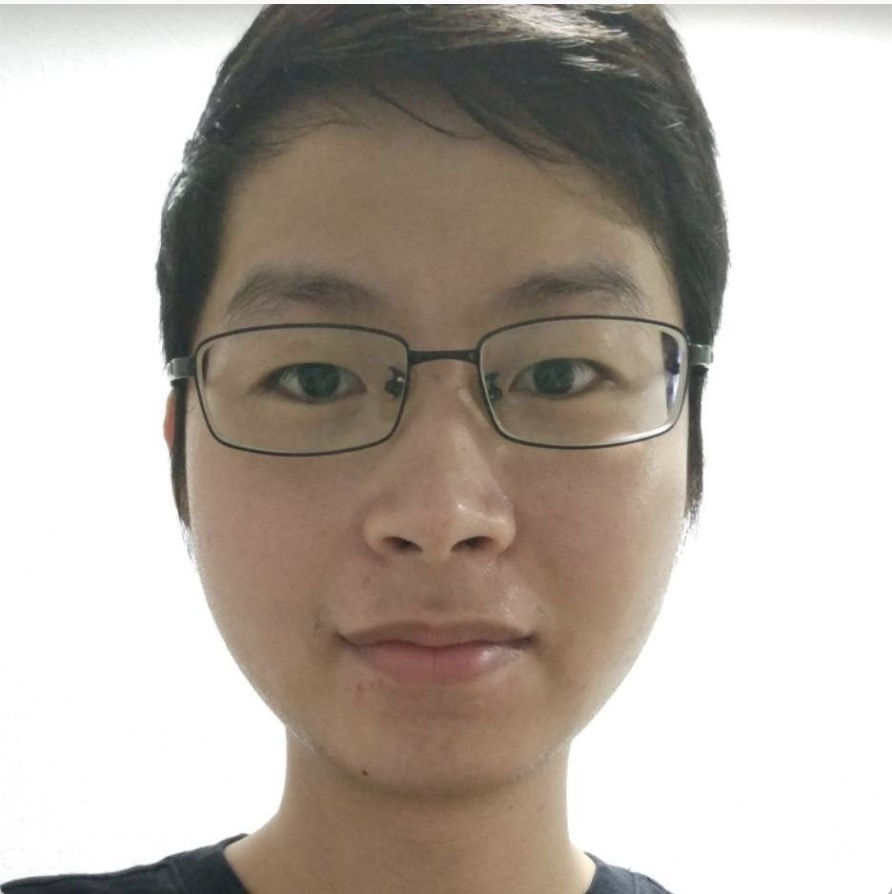
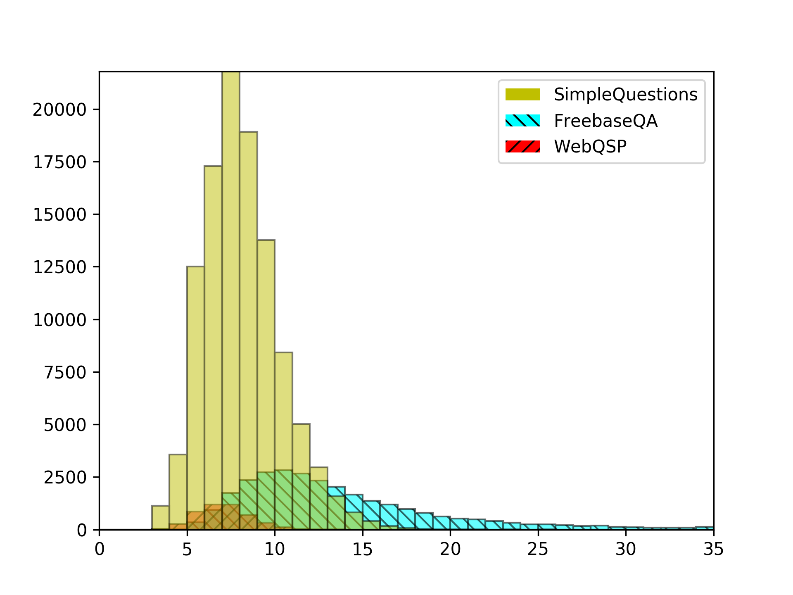
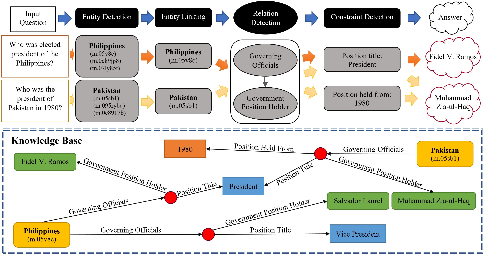
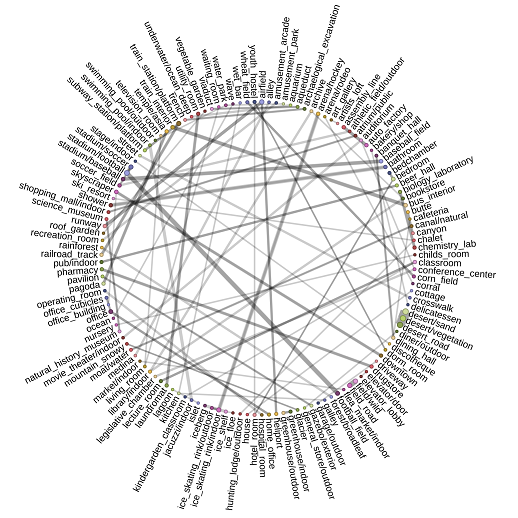

|  |
Dekun Wu 吴德坤Master's student York University, Toronto, Canada
|
|
I was a visiting student in the StatNLP group led by Professor Wei Lu in Singapore University of Technology and Design. Before that, I obtained my Master's degree from the Electrical Engineering and Computer Science (EECS) department at York University, Toronto, Canada (2016 - 2019) under the supervision of Professor Hui Jiang. From 2011 to 2015, I was an undergrad student in Computer Science (Software Engineering) department in Sichuan University, Chengdu, China. My current research interests include Natural Language Processing and Deep Learning. |
|  | Kelvin Jiang*, Dekun Wu*, and Hui Jiang "FreebaseQA: A New Factoid QA Data Set Matching Trivia-Style Question-Answer Pairs with Freebase" in Proceedings of NAACL 2019, pp. 318–323. (* denotes the equal contribution, acceptance rate = 21.3%) [dataset] [paper] [cite] |
|  | Dekun Wu, Nana Nosirova, Hui Jiang, and Mingbin Xu "A General FOFE-net Framework for Simple and Effective Question Answering over Knowledge Bases" Technical Report on arXiv, 1903.12356, 2019 [arXiv] [cite] |
|  | Bao Xin Chen, Raghavender Sahdev, Dekun Wu, Xing Zhao, Manos Papagelis, and John K. Tsotsos "Scene Classification in Indoor Environments for Robots using Word Embeddings" in IEEE International Conference on Robotics and Automation (ICRA) Workshop, 2018. Poster at workshop Multimodal Robot Perception 2018 [project page] [videos] [paper] [arXiv] [cite] |
| ⋙ | July 12th, 2019, joined StatNLP group as a visiting student. |
| ⋙ | April 30th, 2019, successfully defended Master's thesis for the degree of Master of Science at York University. My thesis committee members are Prof. Hui Jiang, Prof. Manos Papagelis, and Prof. Yuejiao Fu. |
| ⋙ | Feb 23rd, 2019, one paper accepted to NAACL-HLT 2019. |
| ⋙ | May 21th, 2018, one paper accepted to ICRA 2018 Workshop: Representing a Complex World. |
| ⋙ | YU Graduate Fellowship - Masters International, York University (2016 - 2018) |
| ⋙ | Outstanding Undergraduate Student Award (28/345), Sichuan University (2014) |
| ⋙ | First-class Scholarship (21/345), Sichuan University (2014) |
| ⋙ | Third-class Scholarship (53/360), Sichuan University (2014) |